Manual de Pruebas — Entrega A
SAMAP Prepaga Digital
Índice
- Antes de empezar — preparar el entorno de prueba
- ¿Qué agrega Entrega A?
- Caso maestro: una venta de punta a punta
- La ceremonia de firma
- Anexo de Incorporación de Adherente
- Solicitud de Cambio de Plan
- Generación de Comisiones
- Documentos generados y el contrato final
- Vigencia Inmediata, Plan Materno y titular empresa
- Casos negativos — lo que el sistema debe impedir
- Anexo técnico — la cadena de activación automática
1. Antes de empezar — preparar el entorno de prueba
Todos los casos de este manual se hacen contra la base de prueba, nunca contra producción. Las pruebas crean ventas, documentos y firmas reales en esa base: son datos descartables, pero quedan.
1.1 Cómo se accede
| Dirección | http://localhost:8080 (aplicación levantada en local contra la base de prueba) |
|---|---|
| Base | US test — ykducvvcjzdpoojxlsig |
1.2 Con qué usuario entrar
Según lo que quiera probar, conviene entrar con un rol u otro. El flujo completo
(cargar, auditar, aprobar y liquidar) lo puede hacer un super_admin solo.
| Usuario | Rol | Para qué sirve en este manual |
|---|---|---|
cacosta.ma@gmail.com | super_admin | Hace todo. Es el usuario con el que se ejecutaron estos casos. |
vendedor1.samap@samap.com.pyRossana Palacios | vendedor | Cargar ventas y ver cómo se ve el sistema con permisos reducidos. |
auditor@saap.com.py | auditor | Aprobar o rechazar ventas desde el Panel de Auditoría. |
eder.arguello@samap.com.py | admin | Es además el firmante de la CONTRATADA. |
1.3 Cómo leer cada caso
Cada caso tiene la misma forma. POSITIVO significa que la acción debe completarse; NEGATIVO significa que el sistema debe frenarla. Un caso negativo que "pasa" es un bug.
| Precondición | El estado en el que tiene que estar el sistema antes de arrancar. |
|---|---|
| Datos | Los valores exactos que se cargaron. Puede usar otros, pero si copia estos las capturas le van a coincidir. |
| Pasos | Qué hacer, en orden. |
| Resultado esperado | Qué tiene que ver al terminar. Es el criterio de aprobación del caso. |

2. ¿Qué agrega Entrega A?
Hasta ahora el sistema sabía hacer ventas nuevas: un titular, sus adherentes, un plan y una ceremonia de firma. Entrega A agrega tres cosas.
a) Operaciones sobre un contrato que ya está firmado
Un contrato firmado no se puede editar — si se editara, la base diría una cosa y el PDF firmado otra. Entonces, para cambiar algo, se emite un anexo: un documento nuevo que se firma aparte y que recién al quedar firmado modifica el contrato original.
| Quiero… | Se hace con… | Dónde está |
|---|---|---|
| Sumar un adherente a un contrato firmado | Anexo de Incorporación de Adherente | Pestaña Incorporaciones de la venta |
| Cambiar el plan y los montos de un contrato firmado | Solicitud de Cambio de Plan | Pestaña Cambio de Plan de la venta |
| Dejar constancia de cobertura inmediata | Anexo Especial de Vigencia Inmediata | Se adjunta como plantilla a cualquier venta |

b) Captura de datos ampliada en la venta
- Vigencia Inmediata (V.I.), a nivel de la venta y también adherente por adherente.
- Fecha de ingreso por adherente.
- Plan Materno como adicional que se contrata junto al plan principal.
- Titular persona jurídica (empresa con razón social y R.U.C.).
c) Generación de comisiones
Un módulo que calcula y liquida la comisión del vendedor por período, con reglas por plan, por vendedor y por tipo de venta. Las operaciones (anexos) también comisionan.
3. Caso maestro: una venta de punta a punta
Éste es el caso más importante del manual: recorre el ciclo completo, desde cargar la venta hasta tener el contrato firmado. Todos los capítulos que siguen se apoyan en él.
CP-01 Cargar una venta nueva POSITIVO
Precondición: estar logueado con un usuario que pueda cargar ventas.
| Cliente | Camila Sosa Schramm — C.I. 4856203 (ya existe en la base de prueba) |
|---|---|
| Plan | Senior Plus |
| Requiere adherentes | Sí (tildado) |
| Vigencia Inmediata | No |
| Tipo de Venta | Venta Nueva |
| Monto Titular / Plan | 460.000 |
- Menú Ventas → botón Nueva venta.
- En Cliente, elegir el cliente. Si no existe, el botón + al lado abre el alta de cliente.
- Elegir el Plan.
- Tildar ¿Requiere adherentes/grupo familiar?.
- Cargar el Monto Titular / Plan.
- Crear Venta.

2026-000027).
Aparecen las pestañas Adherentes, Documentos, DDJJ Salud,
Templates y Auditoría.
CP-02 Cargar un adherente con Vigencia Inmediata POSITIVO
Precondición: venta creada (CP-01), todavía sin firmar.
| Nombre y Apellido | Lucia Sosa Schramm |
|---|---|
| C.I. | 5123456 |
| Parentesco | Hijo/a |
| Fecha de Nacimiento | 15/03/2010 |
| Género | Femenino |
| Teléfono | 981234567 |
| Monto | 150.000 |
| Fecha de Ingreso | 02/09/2026 |
| Vigencia Inmediata | Sí |
- Pestaña Adherentes → Agregar.
- Completar los datos de la tabla.
- Guardar Adherente.
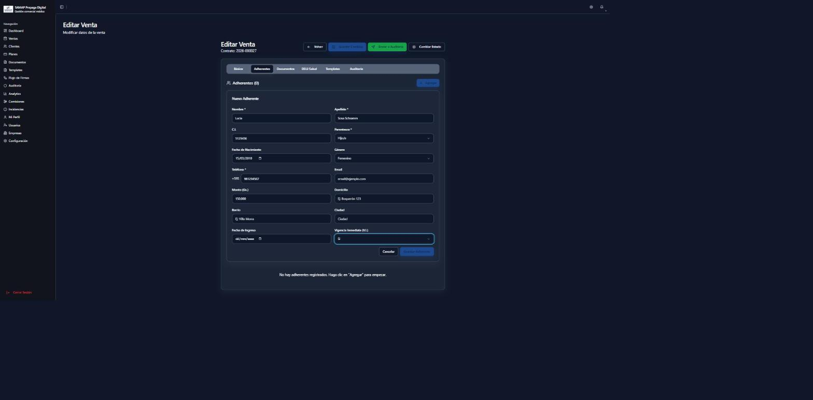
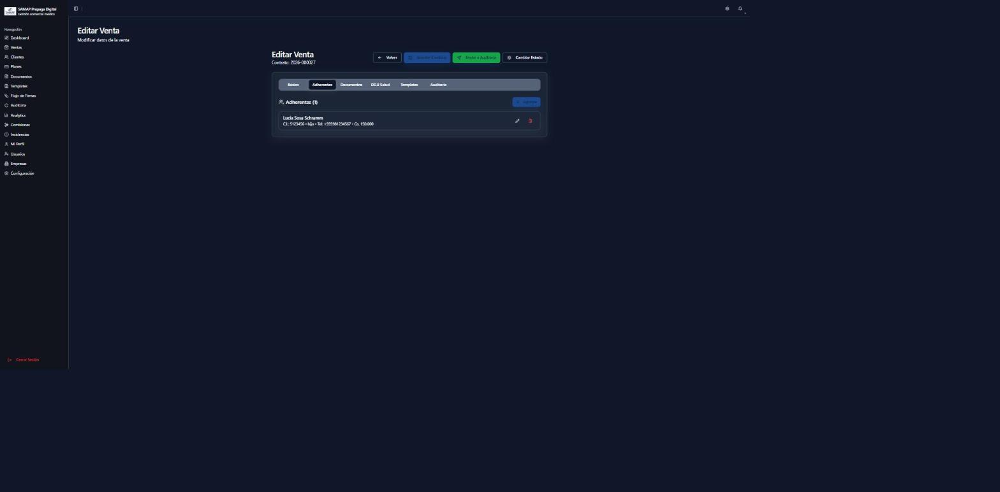

2026-000027 · Senior Plus · Gs. 610.000 · Pendiente · 40% de
progreso. Ahí se verifica que el total quedó bien.CP-03 Enviar a auditoría y aprobar POSITIVO
Precondición: venta con cliente, plan y monto cargados.
- En la venta, botón Enviar a Auditoría. La pantalla vuelve al listado de Ventas y la venta queda en Pendiente.
- Menú Auditoría. La venta aparece en Ventas para Auditar.
- Revisar. Se abre el detalle: datos del cliente, del plan, adherentes y la Declaración Jurada de Salud de cada uno.
- Bajar hasta Decisión de Auditoría y presionar Aprobar Venta.
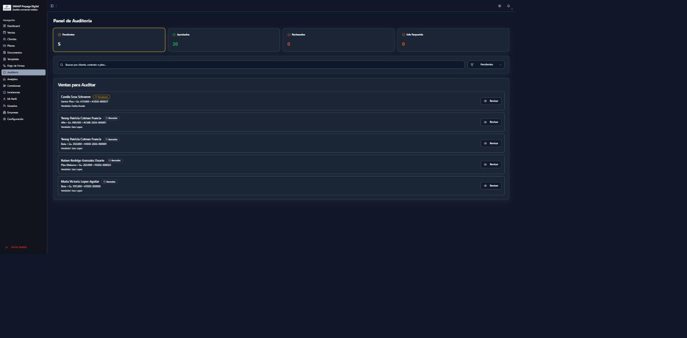
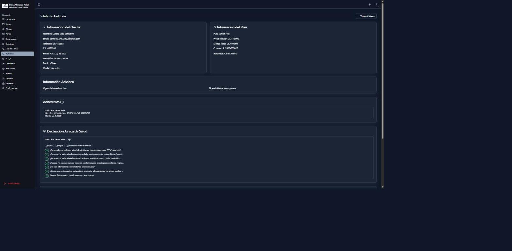
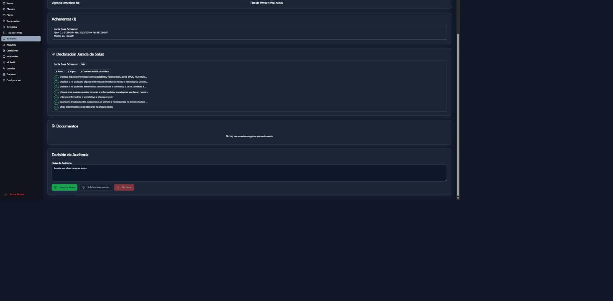
CP-04 Adjuntar plantillas y emitir los documentos POSITIVO
Precondición: venta aprobada por auditoría (CP-03).
Hay que adjuntar tres plantillas, y las tres cumplen un papel distinto:
| Plantilla | Etiqueta | Para qué |
|---|---|---|
| CONTRATO DE PRESTACIÓN DE SERVICIOS DE SALUD | Contrato | Es el contrato. Es el que lleva el bloque de firmas y el que se sella al final. |
| Declaración Jurada de Salud | DDJJ | Genera una DDJJ para el titular y una por cada adherente. |
| Plan Senior (o la del plan que corresponda) | Anexo | El anexo descriptivo del plan. Se adjunta al contrato, no se firma por separado. |
- Pestaña Templates.
- En Seleccionar template… elegir una y presionar Agregar. Repetir para las tres.
- Verificar el texto «Documentos a enviar…»: debe decir la cantidad correcta de adherentes.
- Presionar Enviar Documentos para Firma una sola vez y esperar. Tarda unos segundos.
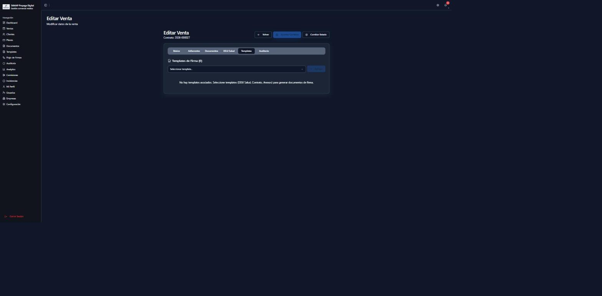
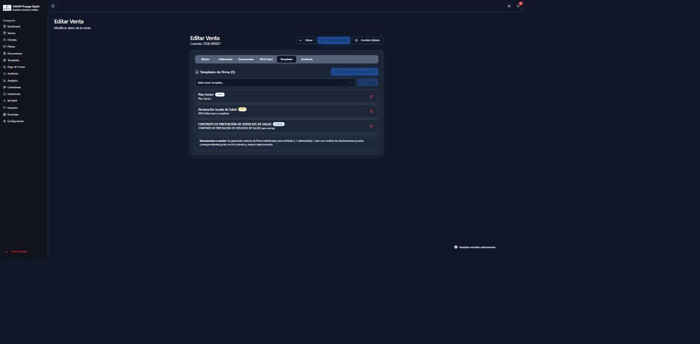
4. La ceremonia de firma
La firma tiene dos pasos. Primero firman todos los del paso 1 (titular y adherentes). Cuando el último del paso 1 termina, el sistema activa solo el enlace de la contratada (paso 2). Nadie tiene que apretar nada para que eso pase.
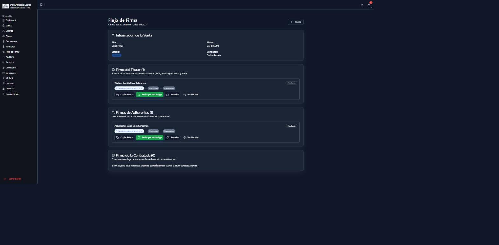
CP-05 Firmar como titular POSITIVO
Precondición: documentos enviados a firma (CP-04).
- En Firma del Titular, presionar Copiar Enlace (recuerde: en prueba el WhatsApp no sale).
- Pegar el enlace en el navegador. Se abre la vista pública del firmante.
- Paso 1: revisar los documentos con el botón Ver. El titular recibe el contrato, su DDJJ y los anexos informativos.
- Paso 2 — Consentimiento Legal: tildar «He leído y acepto las declaraciones anteriores…» y presionar Confirmar Consentimiento.
- Paso 3: revisar el resumen de evidencias y presionar Firmar Todos los Documentos. Si aparece un recuadro blanco para firmar, dibuje la firma con el mouse antes (ver CP-09).
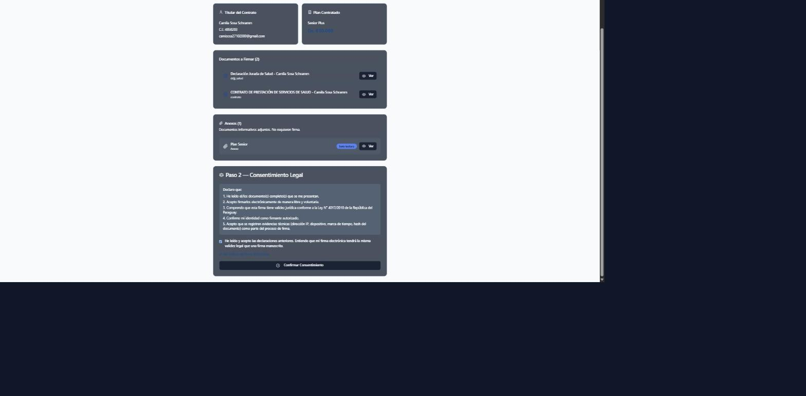
CP-06 Firmar como adherente POSITIVO
Precondición: CP-05 hecho (aunque el orden entre titular y adherentes no importa: los dos son paso 1).
- En Firmas de Adherentes, Copiar Enlace del adherente.
- Abrirlo y repetir consentimiento + firma.
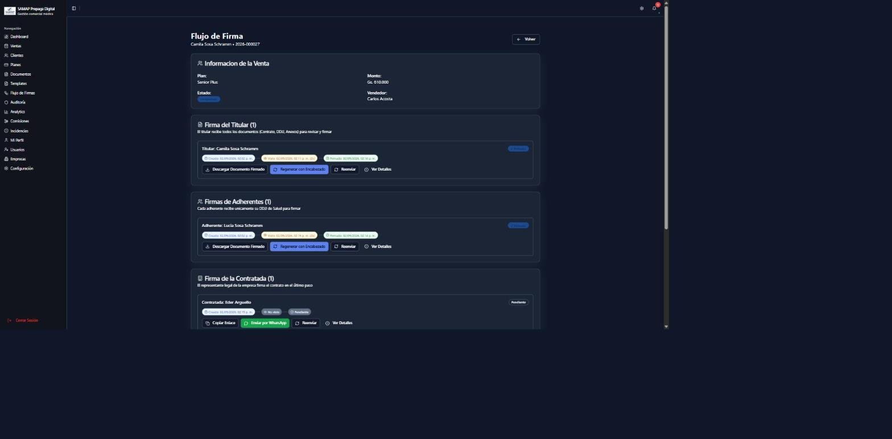
CP-07 Firmar como contratada y cerrar la venta POSITIVO
Precondición: todos los firmantes del paso 1 completados.
- En Firma de la Contratada, Copiar Enlace y abrirlo.
- Consentimiento + Firmar Todos los Documentos.
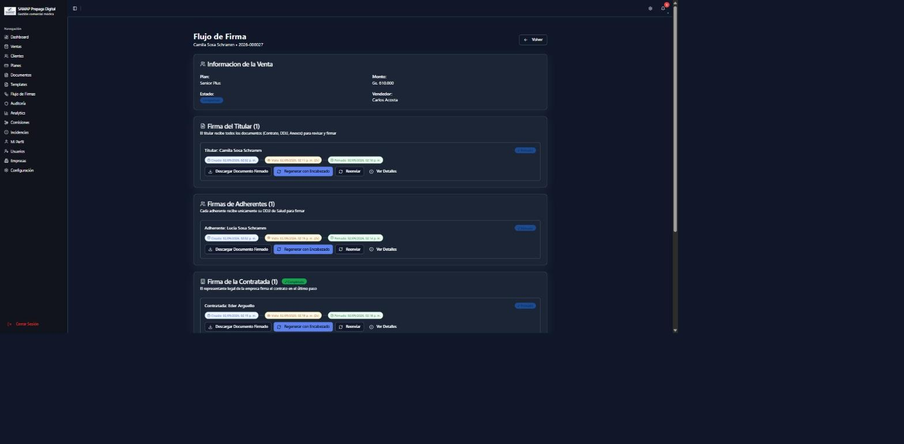
CP-08 Abrir el enlace de la contratada antes de tiempo NEGATIVO
Precondición: el titular todavía no firmó.
- Intentar abrir el enlace de la contratada.
CP-09 Firmar sin trazar la firma NEGATIVO
Precondición: un firmante que todavía no tenga firma electrónica registrada — se le muestra el recuadro Firma Digital.
- Aceptar el consentimiento y bajar hasta Firma Digital.
- Sin dibujar nada, intentar presionar Firmar Todos los Documentos.
5. Anexo de Incorporación de Adherente
Es el formulario para sumar una persona a un contrato que ya está firmado.
No modifica el contrato original: genera una venta-operación aparte
(numerada ANX-…) que se firma por su cuenta. El adherente entra al contrato
madre recién cuando ese anexo queda firmado.
CP-10 Crear la incorporación POSITIVO
Precondición: un contrato firmado (el de CP-07).
| Nombre y Apellido | Mateo Sosa Schramm |
|---|---|
| C.I. | 6789012 |
| Fecha Nac. | 20/07/2015 |
| Parentesco | Hijo/a |
| Fecha de Ingreso | 02/09/2026 |
| Precio | 120.000 |
| Teléfono | 981555444 |
- Abrir la venta firmada → pestaña Incorporaciones.
- Incorporar Adherente.
- Completar los datos. Agregar otra persona permite sumar varias en el mismo anexo.
- Crear Incorporación.
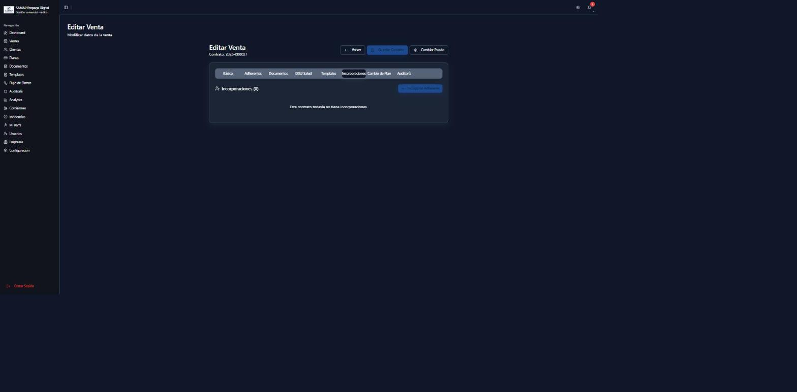
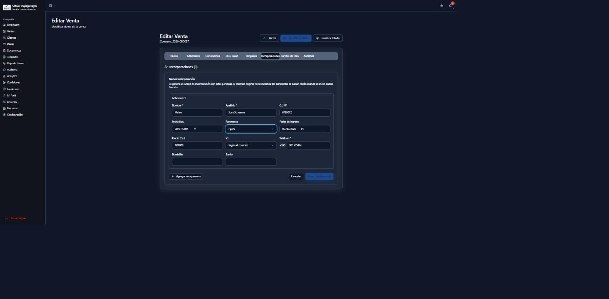
ANX-2026-0000xx con tipo alta_adherente, monto igual a la suma de
los adherentes incorporados (120.000) y estado de auditoría
aprobado_para_templates — no hay que volver a auditarla, porque el contrato
madre ya pasó auditoría. La pantalla salta directo a esa venta-operación.
CP-11 Emitir y firmar el anexo POSITIVO
Precondición: incorporación creada (CP-10).
- En la venta-operación, pestaña Templates.
- Agregar Anexo de Incorporación de Adherente — aparece marcada Recomendada— y también Declaración Jurada de Salud (el adherente nuevo necesita la suya).
- Enviar Documentos para Firma.
- Firmar con el titular y con el adherente nuevo, igual que en CP-05 y CP-06.
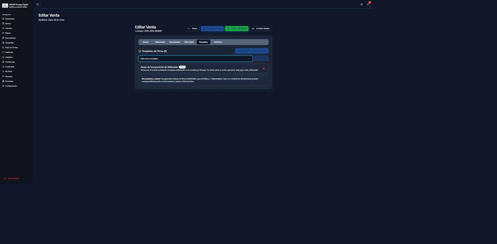
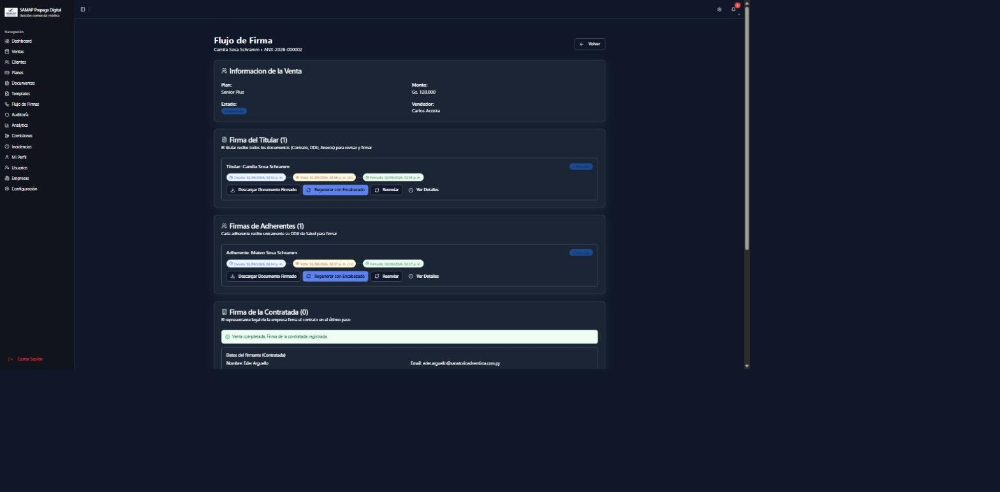
CP-12 Verificar que el contrato madre se actualizó solo POSITIVO
Precondición: anexo completado (CP-11). No hay que apretar ningún botón: la actualización la hace la base.
- Volver a la venta original (
2026-000027) → pestaña Adherentes. - Mirar el total de la venta en el listado de Ventas.
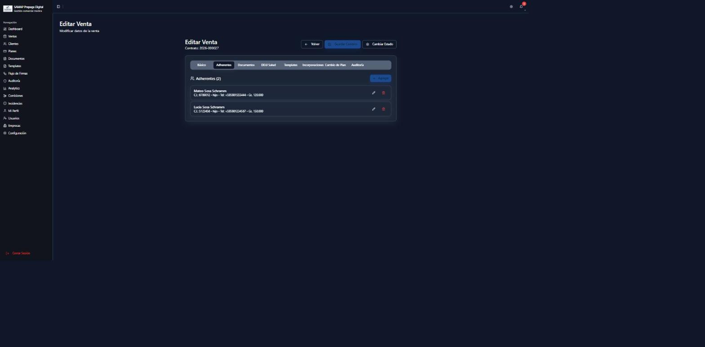
6. Solicitud de Cambio de Plan
Mismo mecanismo que la incorporación, pero para cambiar el plan y los montos de todo el
grupo. Genera una venta-operación CMB-….
CP-13 Crear la solicitud de cambio de plan POSITIVO
Precondición: contrato firmado, con el adherente de CP-12 ya incorporado (plan Senior Plus, total 730.000).
| Motivo | Separación del contrato actual a uno independiente |
|---|---|
| Plan nuevo | Beta |
| Fecha de inicio nvo. Cto. | 01/10/2026 |
| Camila (titular) | 460.000 → 350.000 |
| Mateo | 120.000 → 100.000 |
| Lucia | 150.000 → 120.000 |
- Venta firmada → pestaña Cambio de Plan → Solicitar Cambio de Plan.
- Elegir Motivo del cambio y Plan nuevo.
- Cargar el Monto nuevo de cada integrante en la tabla.
- Crear Cambio de Plan.
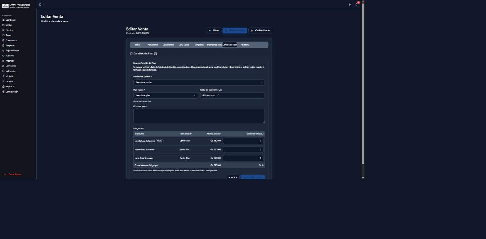
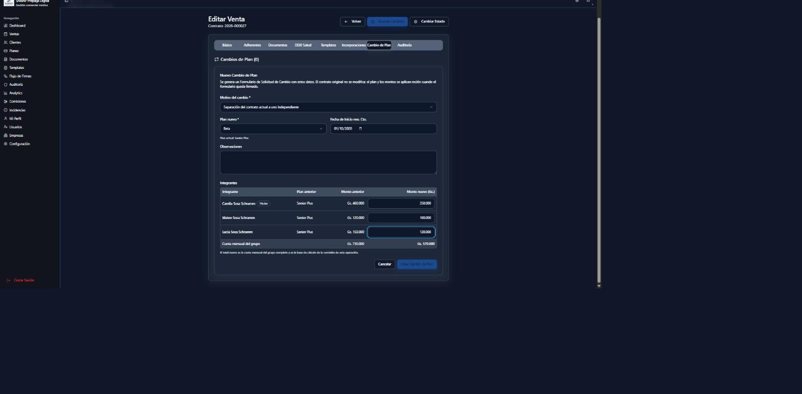
CMB-2026-0000xx, tipo cambio_plan, monto 570.000. El contrato
madre sigue en Senior Plus con 730.000.
CP-14 Firmar el formulario y verificar la aplicación POSITIVO
- En la venta-operación → Templates → agregar Formulario de Solicitud de Cambio de Plan.
- Enviar Documentos para Firma y firmar con el titular.
- Volver a la venta original y mirar el plan y el monto.
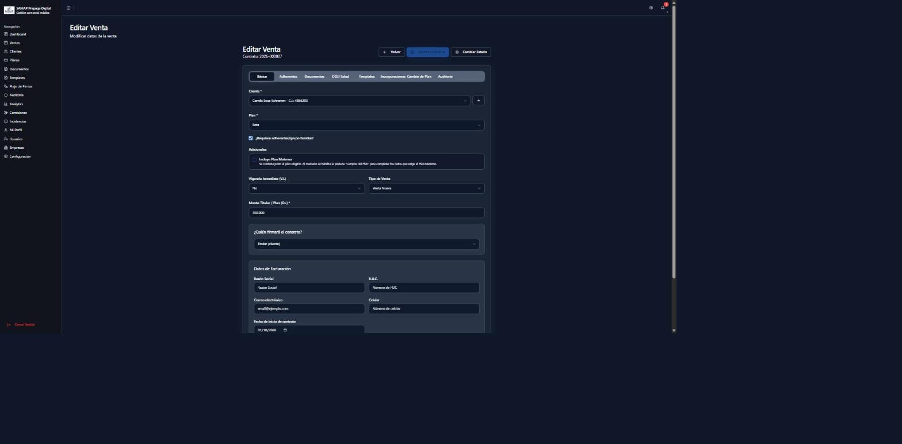
2026-000027 ahora dice
Beta y monto titular 350.000.7. Generación de Comisiones
Menú Comisiones. Cuatro pestañas: Liquidaciones (historial),
Nueva liquidación (calcular y generar), Reglas y Configuración.
Acceden super_admin, admin, financiero,
supervisor y auditor; generan y cierran los tres primeros.
7.1 Las reglas — hay que mirarlas primero
Antes de liquidar conviene entender de dónde sale el porcentaje. Hay dos niveles:
- Vendedores que comisionan: quién está habilitado y su % por defecto, que se aplica sólo a las ventas que ninguna regla cubre.
- Reglas de comisión: la matriz fina — por plan, por vendedor, por tipo de venta, con vigencia y prioridad. Si una regla aplica, manda la regla.
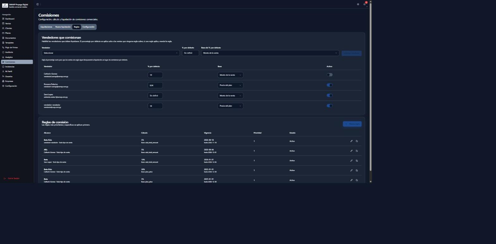
CP-15 Calcular una liquidación POSITIVO
- Pestaña Nueva liquidación.
- Elegir Vendedor, Desde y Hasta.
- Calcular.
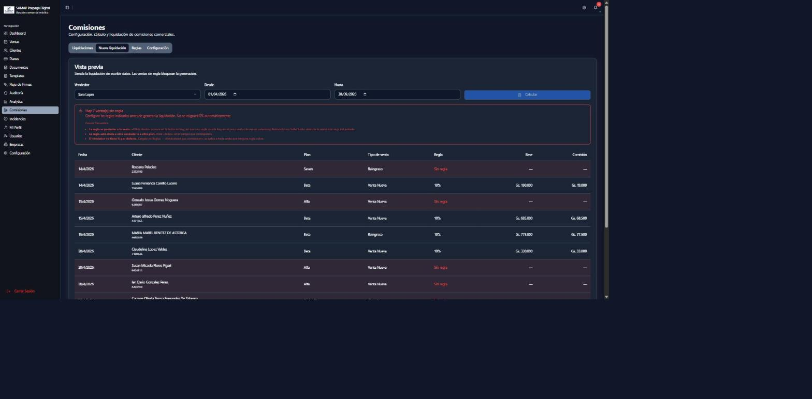
CP-16 Generar con ventas sin regla NEGATIVO
Precondición: un período que incluya alguna venta cuyo plan no esté cubierto por ninguna regla.
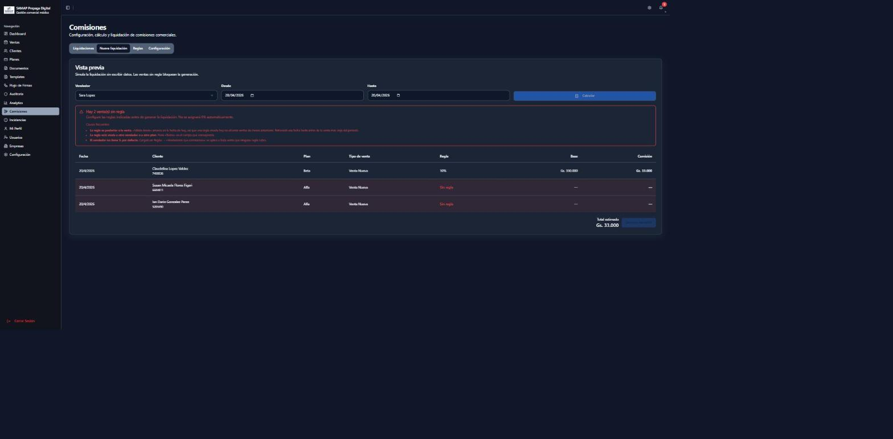
Qué significa: es a propósito. Prefiere frenar antes que liquidar al 0% una venta que en realidad comisionaba. Hay que cargar la regla que falta y volver a calcular. El propio aviso lista las tres causas típicas: la regla empieza después de la venta, la regla está atada a otro vendedor o plan, o el vendedor no tiene % por defecto.
CP-17 Fechas invertidas NEGATIVO
- Poner Desde 30/09/2026 y Hasta 01/09/2026.
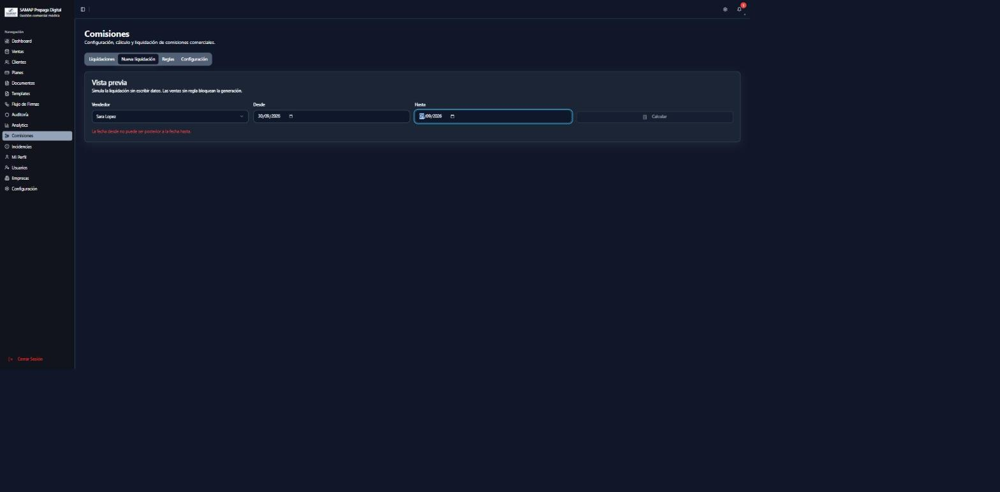
CP-18 Revisar una liquidación cerrada POSITIVO
- Pestaña Liquidaciones → Ver detalle.
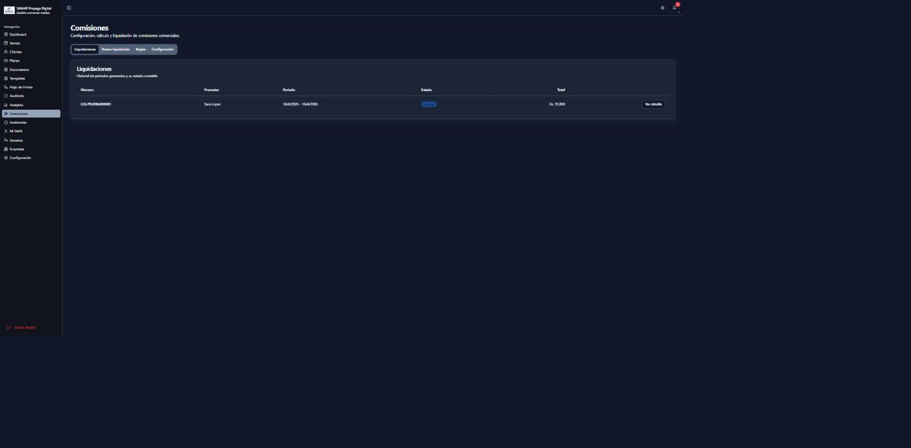
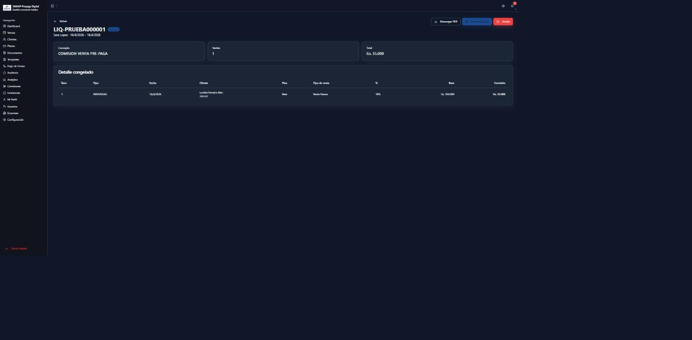
8. Documentos generados y el contrato final
Menú Documentos. Los documentos se agrupan por venta; al expandir una se ven todos, con su tipo y su estado.
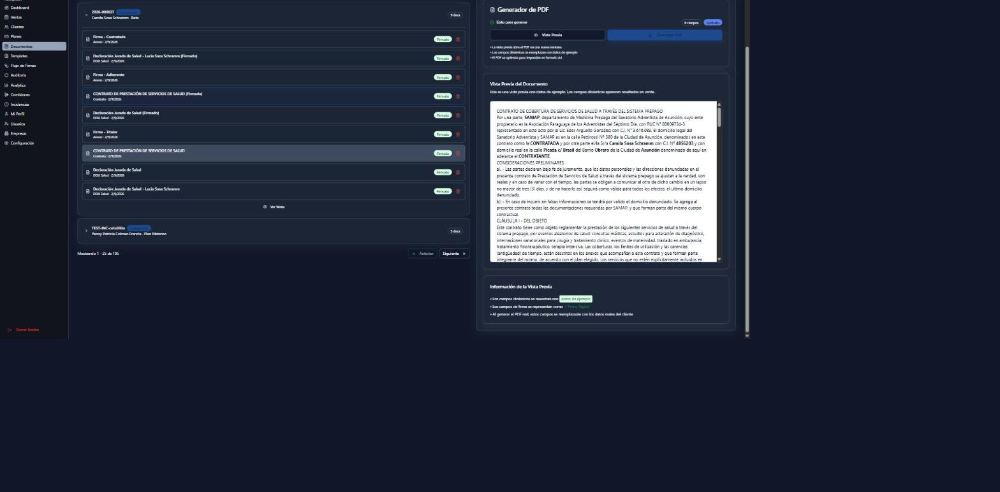
Al seleccionar uno, el panel derecho muestra el Generador de PDF con Vista Previa y Descargar PDF, y debajo el contenido renderizado con los campos dinámicos ya resueltos.
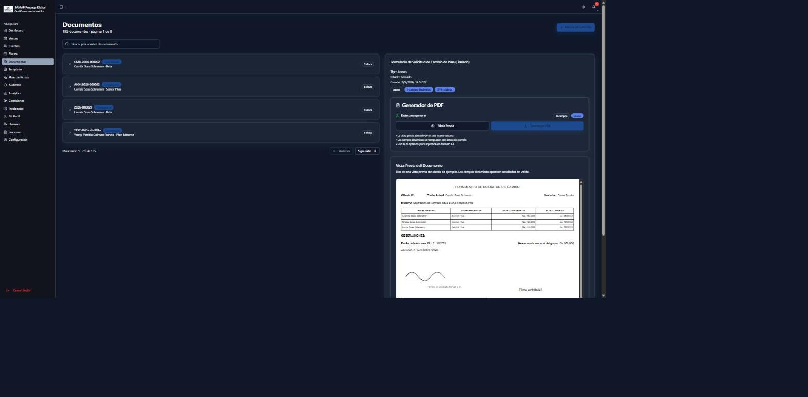
8.1 Cómo se lee el contrato final
Ésta es la última página del contrato ya firmado y sellado, tal como sale impreso. Vale la pena leerla con detalle, porque cada dato marcado viene de un lugar distinto del sistema:
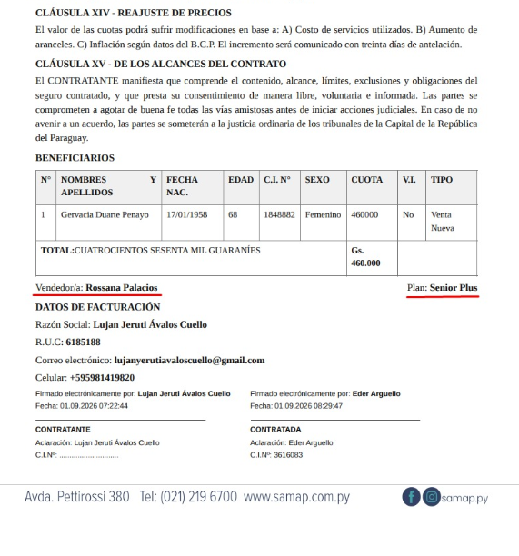
| Lo que se ve en el PDF | De dónde sale |
|---|---|
| Tabla BENEFICIARIOS — N°, nombres, fecha nac., edad, C.I., sexo, cuota | Los adherentes cargados en la pestaña Adherentes de la venta. La edad se calcula sola a partir de la fecha de nacimiento. |
| Columna V.I. | La Vigencia Inmediata de cada adherente. Es el campo de Entrega A que se carga en el alta del adherente; si quedó en «Según la venta», hereda el valor de la venta. |
| Columna TIPO | El Tipo de Venta (Venta Nueva, Reingreso…). Por eso el selector de tipo de venta importa: sale impreso en el contrato. |
| TOTAL en letras y en números | El total de la venta, que calcula la base sumando el monto del titular y el de cada adherente. Es el mismo número que ve en la columna MONTO del listado de Ventas. |
| Vendedor/a | El vendedor asignado a la venta — el usuario que la cargó. Es también el que se usa para liquidar la comisión. |
| Plan | El plan elegido en la pestaña Básico. Si hubo un Cambio de Plan firmado, acá aparece el plan nuevo. |
| DATOS DE FACTURACIÓN — Razón Social, R.U.C., correo, celular | El bloque Datos de Facturación de la pestaña Básico. Es lo que se usa cuando el titular factura a nombre de una empresa. |
| Firmado electrónicamente por… con fecha y hora, en las dos columnas | Se escribe al sellar el PDF: el de la izquierda es el CONTRATANTE (el titular, cuando firmó); el de la derecha, la CONTRATADA (Eder Arguello, C.I. 3616083). Las dos marcas de tiempo forman parte del paquete de evidencia. |
9. Vigencia Inmediata, Plan Materno y titular empresa
9.1 Vigencia Inmediata (V.I.)
La V.I. se define en dos lugares y el más específico gana.

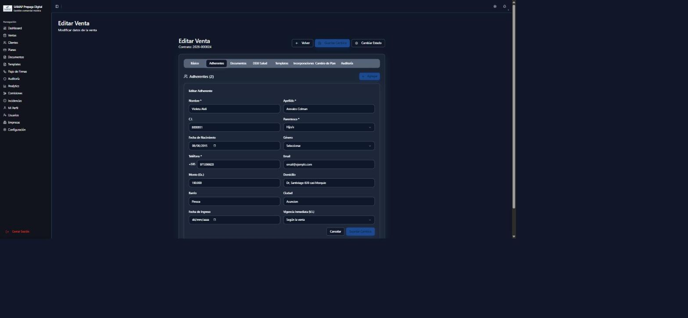
CP-19 Emitir el Anexo de Vigencia Inmediata POSITIVO
- Marcar V.I. = Sí en al menos un adherente.
- En Templates, agregar Anexo Especial de Vigencia Inmediata.
- Enviar documentos a firma.
9.2 Plan Materno como adicional
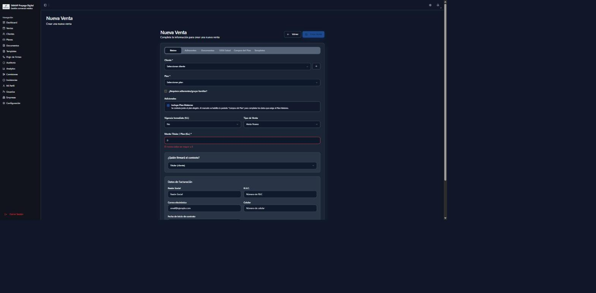
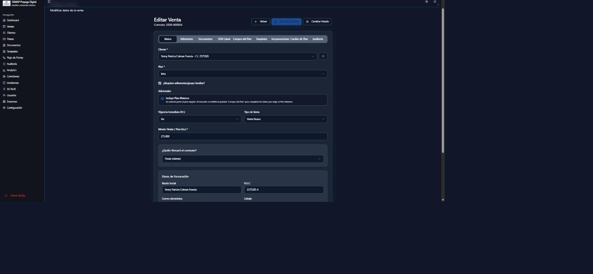
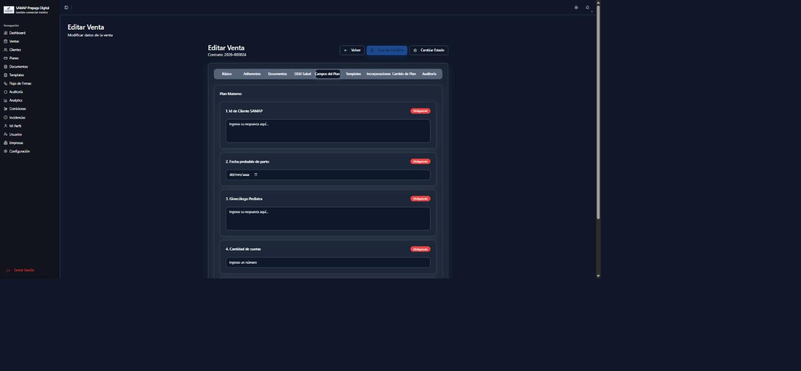
CP-20 Enviar a auditoría con campos del Plan Materno vacíos NEGATIVO
- Tildar Incluye Plan Materno y dejar campos obligatorios sin completar.
- Presionar Enviar a Auditoría.
9.3 Titular persona jurídica (empresa)


CP-21 Guardar una empresa sin razón social NEGATIVO
10. Casos negativos — lo que el sistema debe impedir
Estos casos son tan importantes como los positivos. Cada uno protege algo concreto: que no se duplique un contrato, que no se edite un documento ya firmado, que no se liquide mal una comisión. Si alguno de estos "pasa", hay que reportarlo.
CP-22 Crear una venta con campos obligatorios vacíos NEGATIVO
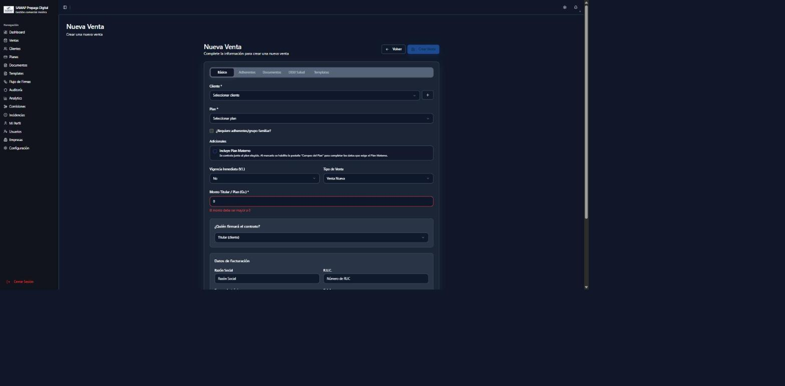
CP-23 Adjuntar plantillas sin aprobar la auditoría NEGATIVO
Precondición: venta en estado Pendiente de auditoría.
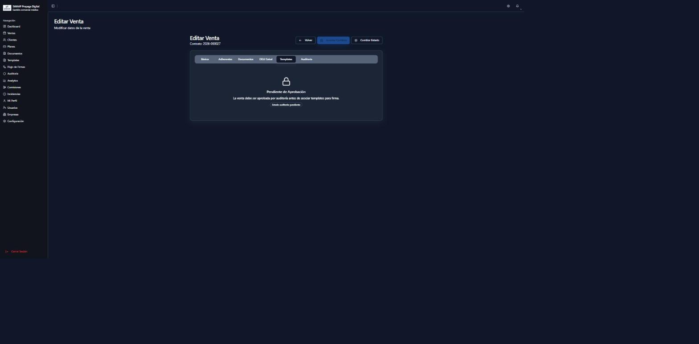
Qué significa: no se puede mandar a firmar algo que nadie revisó.
CP-24 Enviar documentos con un adherente sin DDJJ NEGATIVO
Precondición: una venta con adherentes en la que se adjuntó el contrato pero no la plantilla de Declaración Jurada de Salud.
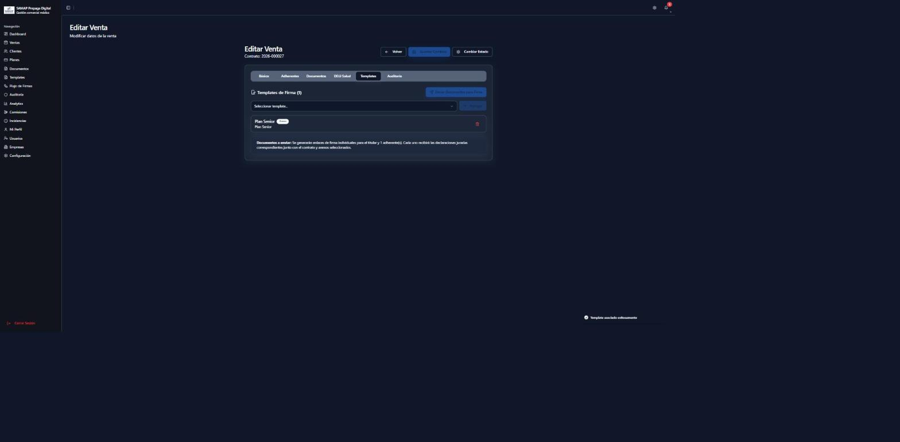
Qué significa: la validación corre antes de tocar la base, así que un envío fallido no deja la venta a medio armar.
CP-25 Doble clic en «Enviar Documentos para Firma» NEGATIVO
- Presionar el botón dos veces seguidas, rápido.
Qué significa: es la protección contra contratos duplicados. Si después de dos clics ve dos contratos en el módulo Documentos, repórtelo.
CP-26 Modificar adherentes de un contrato firmado NEGATIVO
Precondición: contrato firmado o completado.
- Pestaña Adherentes → intentar agregar, editar o borrar uno.
Qué significa: el PDF firmado no se puede regenerar, así que si la base cambiara, el papel diría otra cosa. No hay excepción por rol: ni admin ni super_admin pueden. El camino correcto es el anexo del capítulo 5.
CP-27 Regenerar documentos de una venta ya cerrada NEGATIVO
Precondición: venta con la contratada ya firmada.
- Intentar Regenerar Documentos desde la pestaña Templates.
Qué significa: esto está bien. El error viene de la base, no del navegador, y protege la evidencia de una firma real. Ver un error acá es el comportamiento correcto, no una falla.
CP-28 Abrir un enlace de firma vencido, revocado o ya usado NEGATIVO
Qué significa: si le pasa con un enlace que debería estar vigente, genere uno nuevo con Reenviar desde Flujo de Firma.
CP-29 Editar o cancelar un anexo ya enviado a firmar NEGATIVO
Qué significa: editar un anexo que ya está firmándose dejaría el PDF diciendo una cosa y la base otra.
10.1 Tabla de referencia rápida
Otros mensajes con los que se puede topar y qué significan:
| Mensaje | Cuándo aparece |
|---|---|
| «Guarde la venta primero» | Abrió la pestaña Templates sin haber creado la venta. |
| «Debe tener cliente y plan asignados antes de enviar a auditoría» | Envío a auditoría con datos incompletos. |
| «Agregá al menos un adherente.» | Incorporación sin ninguna persona cargada. |
| «Elegí el plan nuevo.» | Cambio de plan sin plan destino. |
| «El cambio de plan ya fue aplicado al contrato. No se puede cancelar.» | Intento de cancelar una operación ya activada. |
| «Documentos regenerados. Se conservaron los enlaces de firma vigentes…» | Regeneró documentos y había enlaces todavía válidos: no se crean nuevos. |
| «No se encontró el contrato firmado por el titular…» | La contratada intentó firmar y el sistema no pudo ubicar el contrato del titular. Reportar: frena a propósito para no perder la firma del cliente. |
| «El prefijo de liquidación es obligatorio.» | Configuración de comisiones sin prefijo. |
11. Anexo técnico — la cadena de activación automática
En los capítulos 5 y 6 se repite la misma frase: «nadie apretó aplicar». Vale la pena explicar por qué, porque cambia la forma de probar.
Cuando se firma el último enlace de una venta-operación, se dispara una cadena dentro de la base de datos:
| 1 | Se firma el último enlace → el enlace queda completado. |
|---|---|
| 2 | Un disparador lleva la venta-operación a completado. |
| 3 | Según el tipo: alta_adherente suma los adherentes al contrato madre; cambio_plan aplica plan, fecha y montos. |
| 4 | Se recalcula el total del contrato madre. |
ANX-… o CMB-…).
11.1 Qué reportar cuando algo falla
Para que un problema se pueda investigar, incluya siempre:
- El número de contrato (
2026-000027,ANX-…,CMB-…). - El caso de este manual que estaba ejecutando (
CP-12, etc.). - El mensaje textual que vio, o una captura de pantalla.
- Con qué usuario estaba logueado.
- Si el problema se repite al intentarlo de nuevo.